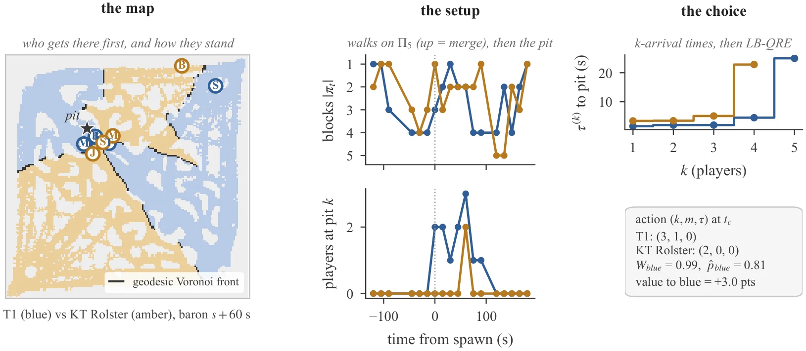
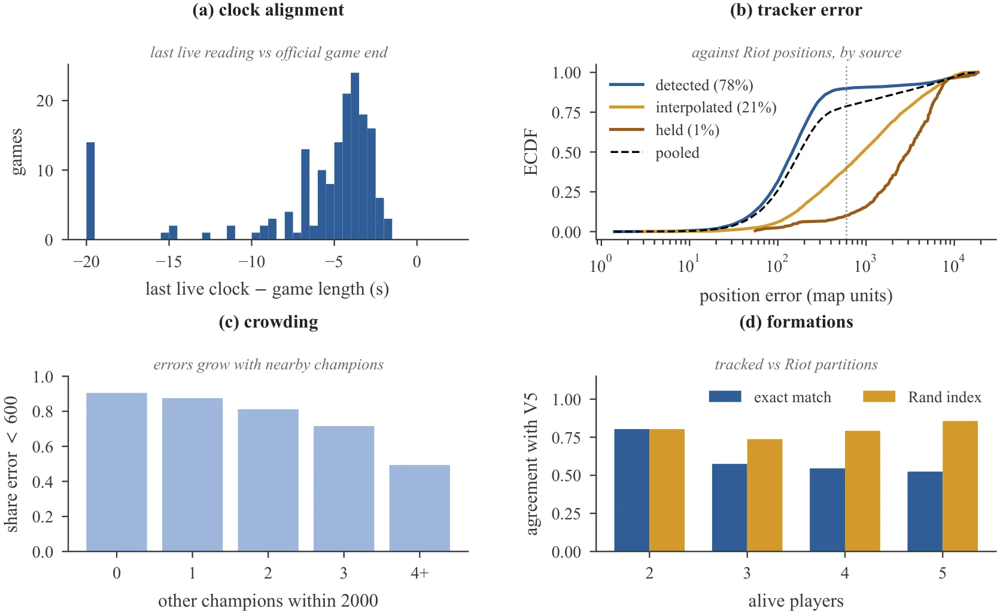
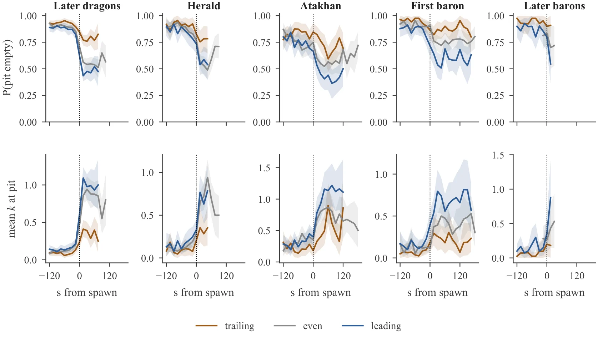
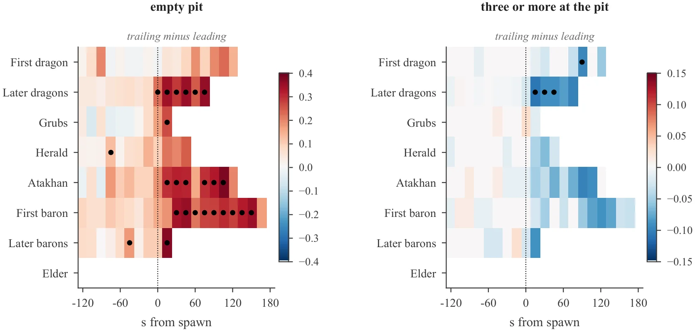
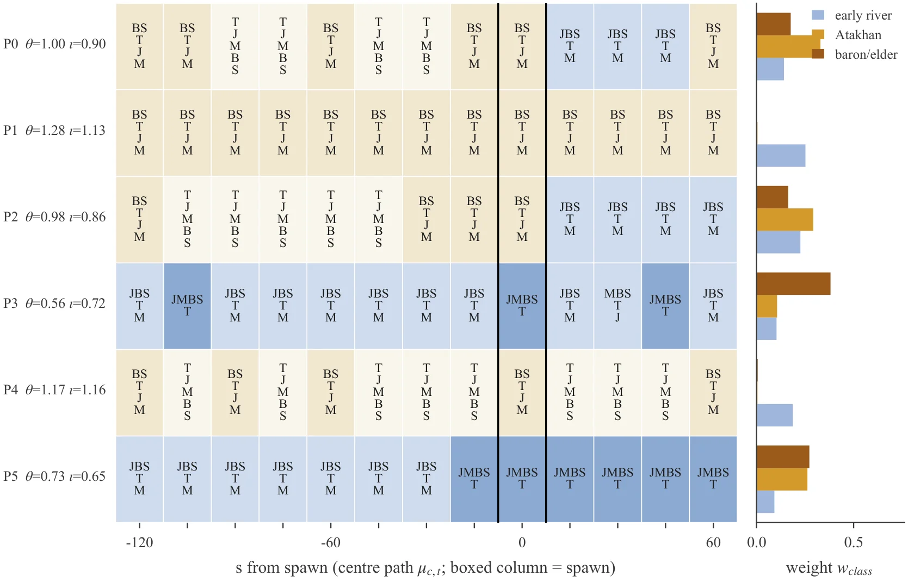
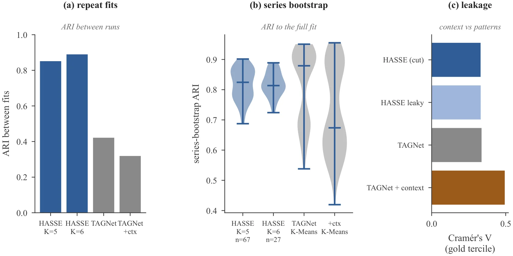
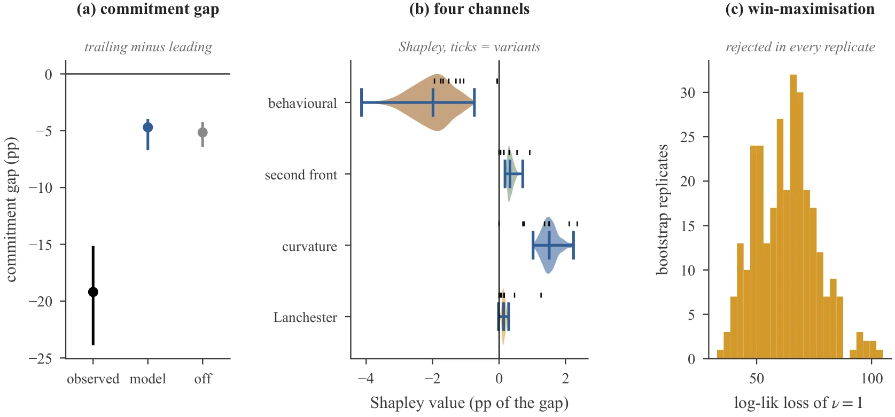
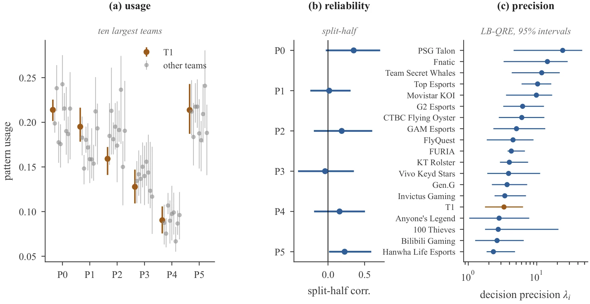
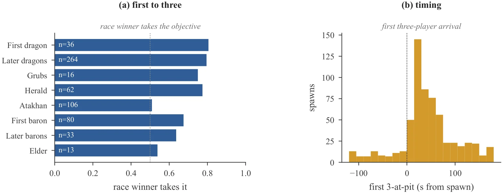
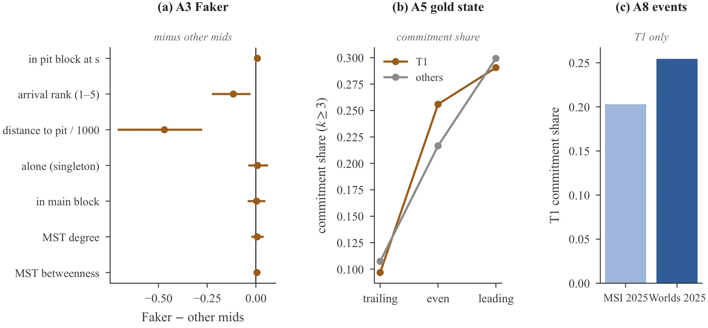

资源刷新之前,
队伍已在分配人手
Allocation Before the Clock
每一次龙、大龙刷新之前,职业战队的五个人都在无声地决定:谁走到坑边,谁守住一条线,什么时候压上去。我们把这些决定量了出来。
UNSW Sydney · 通讯作者:Zheng Gao · zheng.gao1@unsw.edu.au
论文全名:Allocation Before the Clock: Graph, Set and Game Theory of Professional League of Legends Objective Setups
刷新时间双方都知道到秒。真正拉开差距的,是刷新前那一分钟:十个人怎么走,谁先到,谁不去。
- 5:00第一条元素龙
- 8:00虚空巢虫
- 15:00峡谷先锋
- 20:00亚塔坎
- 25:00纳什男爵

一张地图,看懂“站位”
下面是我们用真实的“可走区域”画的简化地图(不是游戏美术)。点一个资源,看它的坑在哪里。“站位”就是在它刷新前后,一支队伍的五个人在这张地图上怎么分布。
谁去坑边?
有几个人走到了资源旁边。零个、两个,还是四个?
谁守着别的地方?
另一边的线、另一个目标——有人故意留在那里,就是在“用别处换”。
什么时候压上?
刷新前就守好,还是刷新后才赶到?早到几秒,常常就决定了谁拿资源。
- 场比赛(MSI 2025 + Worlds 2025)
- 164
- 次资源刷新(龙、大龙、巢虫……)
- 1,516
- 个队伍站位,覆盖 1,497 次刷新(另 19 次没有追踪)
- 2,994
- 支战队,60 个系列赛
- 19
我们怎么量出来的
我们没有游戏内部的实时位置。我们有的是官方转播的画面,和 Riot 每分钟一次的官方位置。我们把这两样接起来。点开每一步看看。
我们发现了什么
四件事,用大白话讲。每一件下面都有真实数据画的图。
落后的队伍,更常让坑边空着
刷新之后,落后(经济)的队伍坑边没人的比例,比领先的队伍高得多。在第一条大龙刷新后 45 秒,高出 34.8 个百分点。
“百分点”就是两个百分比相减。刷新之前三种状态看起来差不多;差距是刷新之后才冒出来的。我们用了好几种方式复核,方向都一样。
落后减领先:坑边没人的比例差
亮色胶囊是 95% 区间。数字越大,落后队伍越常让坑边空着。
先走到的人,通常拿到资源
我们记录每次刷新里,哪一方先凑齐三个人到坑边。这一方在河道资源上大约拿下 8 成,在大龙上约 7 成。
亚塔坎是个例外:先到的一方只拿到一半。还有一点:中位数是刷新之后 30 秒才有一方凑够三人。胜负是在“钟声之后”才定的。
先凑齐三人的一方拿到资源的比例
括号里是样本数。
六种常见站位,重新抽样也能找回
我们让一个模型自己去找队形的“套路”。它找到六种。选一种,拖动时间,看五个人怎么走。(位置只是示意,只有“谁和谁在一起”是真实结果。)
把整个模型放到重新抽样(按系列赛重抽)的数据上再拟合一遍,六种站位仍然能找回,一致性约 0.82(1 表示完全相同)。这和重新运行 TAGNet 聚类那一步的 0.81 相当。
队伍在乎打架与路程,不在乎资源本身
我们建了一个“博弈模型”,用来读队伍的选择:每支队伍在“去几个人、守几个人、早到还是晚到”之间挑一个。结果显示,队伍的选择对打架的胜负、走过去的路程、每多派一个人的代价有反应,对资源本身的价值几乎没有反应(权重 0.018;若只看胜率应为 1)。把权重强行设成 1,拟合会差得多(约 60 个对数似然点)。
“落后队伍更不到坑边”的差距(百分点)
模型只复现了约四分之一,而且主要来自比赛局势(存活人数、经济、路程)。四种“价格因素”加在一起只多贡献约 0.5 个百分点。这是一个坦白的负面结果。
和 TAGNet(反恐精英 2)相比,我们学到了什么
TAGNet 是研究《反恐精英 2》防守站位的论文,也是我们的灵感来源。它第一次把“战术站位”当成可以自动归类的东西来研究。我们把同样的想法搬到《英雄联盟》,发现要做好得多注意几件事:
地图有墙。 直线距离会把隔着一堵墙的两个人当成“很近”。我们用沿路走的距离,在一张 12,944 个可走格子的地图上算。
结果要经得起重新抽样。 我们把整个模型在重抽样的数据上重新拟合,六种站位一致性约 0.82;只重跑 TAGNet 的聚类那一步约 0.81,两者相当。我们在这一点上并不比它强。
取平均的方式值得留意。 同一个差距,按“每队平均”算 p=0.046,按场次加权 p=0.052,同队内比较 p=0.078。差距的大小几乎一样,只是有没有跨过 0.05 这条线。这是对“怎么平均”的一个提醒,不是说谁做错了。
队伍“指纹”要带误差线。 每支队伍只有 31–394 次站位,队伍之间的差别大多还淹没在噪声里。
同一个差距,三种算法
落后队伍在刷新后 60 秒“三人以上到坑边”的比例低多少(百分点)。胶囊是 95% 区间。
用了哪些数学
不用公式也能讲清楚:这篇论文借了五样数学工具,每一样都对应一个很直观的问题。
图论
把地图看成一张路网。沿路走的最短路程,决定了谁先到、谁的“地盘”更大。
集合划分
五个人分成几小堆,一共有 52 种分法。每一种分法就是一种“队形”。
隐马尔可夫模型
队形怎样随时间变化?背后有几种“套路”在悄悄切换,模型把它们找出来。
博弈论(量化反应均衡)
每支队伍权衡得失,挑一个“派几个人”。它们不一定每次都选最优,这正是模型描述的。
兰彻斯特定律
人数怎样决定团战:人多的一方通常赢得更轻松,少的一方损失更重。
T1 与 Faker:数据说了什么,没说什么
T1 是 2025 全球总决赛的冠军,Faker 是传奇的中单。粉丝最关心的问题是:能不能在数据里看见他们“特别”的地方?我们按同一套规则查了三个说法,结果有点出人意料,也很克制。
“Faker 控制地图”
有一点点。在资源刷新前一分钟,T1 的中单(Faker 首发的比赛,432 次站位)离坑的路程比别的中单平均近 469 个单位(区间 −709 到 −275),约为地图宽度的 3%。到坑边的先后顺序也略靠前。这是描述,不是证明“控图”。
“T1 落后也不慌”
T1 和别的队伍一样。落后时少派人去坑边,是所有队伍的共同规律:T1 的“落后减领先”差距是 −0.194,其他队伍是 −0.192,两者之差 −0.002(区间 −0.133 到 0.149)。
“T1 同人数时更会打团”
看不出来。在 399 场有 T1 参与的团战里,实际结果和模型预测的差只有 −0.002(区间 −0.045 到 0.046),几乎是零。这不代表他们没有优势,只代表这个测量里看不出。
这份数据量不了的
- 英雄池深度、BP 阶段的心理战
- 队内语音沟通、临场指挥
- 视野、技能冷却、兵线状态
- 某个选手的个人能力:数据集里没有选手名字,只有位置和队伍,追踪本身也有误差
背景(不是本研究的数据,来源 Wikipedia、gol.gg):Faker 是第一位拿下六座世界赛冠军的选手;T1 在 2025 年总决赛 3-2 击败 KT Rolster,成为首支三连冠球队(2023–2025);MSI 2025 他们 2-3 惜败 Gen.G 获得亚军。
数据集:全部公开的部分
我们发布从视频里读出来的坐标、整理好的站位表,以及复现论文每一个数字的代码。不发布视频、画面、声音,也不发布 Riot 的原始数据。
- 默认版本大小
- ≈ 87 MB
- 轨迹行数
- 5,758,940
- 数据许可(计划)
- CC BY-SA 4.0
- 代码许可
- MIT
里面有什么
| 内容 | 是什么 | 规模 / 格式 |
|---|---|---|
| 位置轨迹 | 每名选手每 0.5 秒一个位置,以及这个位置是“看到的”还是“推算的” | 5,758,940 rows · parquet |
| 站位快照 | 每支队伍在每次刷新前后 21 个时间点的站位:谁在坑边、几个人多快能到、队形怎么分组 | 56,220 rows × 68 cols · parquet |
| 资源刷新表 | 每次刷新的时间、被谁击杀、在哪里(1,516 次,其中 1,497 次有追踪轨迹) | 1,516 rows · csv |
| 团战表 | 每场团战的人数、击杀、位置 | 2,325 rows · parquet |
| 派生表 | 事件价值、“谁先到”、六种站位的概率与说明 | csv · parquet · json |
| 地图与校准 | 可走区域(12,944 格)、每局小地图校准、视频与比赛时钟对齐 | csv |
| 场次清单 | 164 局核心比赛,以及 2023–2026 共 2,853 局职业比赛的元数据和视频“指针”(不含视频) | csv |
| 代码 | 从公开来源重建一切的脚本 | python · MIT |
文件怎么摆放
release/
manifests/ games, objective_spawns.csv, vod pointers
alignment/ clock alignment (video time -> game time)
minimap/ minimap_calibration.csv
navgraph/ nav_nodes.csv (the walkable map)
tracks/ minimap_tracks_2fps.parquet
derived/ team_setup_snapshots.parquet, fights.parquet,
event_values.csv, arrival_race.csv,
hasse_posteriors_K6.parquet, hasse_patterns_K6.json
results/ the summary tables and figures behind the paper
code/ scripts to rebuild everything
怎么读它(Python)
import pandas as pd
# one row = one team at one moment around one spawn
setups = pd.read_parquet("derived/team_setup_snapshots.parquet")
# first baron, 45 s after the spawn, teams that are behind in gold
baron = setups[(setups.objective == "BARON_NASHOR")
& (setups.idx == 1) & (setups.offset_s == 45)]
behind = baron[baron.gold_diff < 0]
print("pit empty:", (behind.k_pit == 0).mean()) # k_pit = players at the pit
# the raw tracks: 2 positions per second per champion
tracks = pd.read_parquet("tracks/minimap_tracks_2fps.parquet")
one_game = tracks[tracks.RiotPlatformGameId == tracks.RiotPlatformGameId.iloc[0]]这只是一个粗略的看法,不是论文的完整方法;列名见数据集里的 LAYOUT 说明。
不包含
- 视频、画面、声音(YouTube 和 Riot 的规定不允许再发布)
- Riot 的原始比赛数据、Oracle’s Elixir、PandaSkill 的原始数据
- 选手名字或账号(只有位置和队伍)
许可与使用条件
- 数据:CC BY-SA 4.0(计划)。代码:MIT。
- 要署名我们和 Leaguepedia(部分表格来自它,需相同方式共享)。
- 请只做非商业使用,尊重 Riot 对游戏数据的权利。
- 不要试图识别选手身份。
- 这是项目的计划,不是法律意见;个别第三方条款仍在最终确认,发布时以数据集自带的 LICENSING 为准。
- Riot 声明:本项目与 Riot Games 无关,Riot Games 不为其背书。
适合和不适合
- 适合:研究资源前的站位、测试追踪与队形方法、建模队伍行为、复现论文。
- 不适合:评价或球探某个选手、博彩、其他版本或规则的结论、任何需要视频的事。
怎么引用
暂时没有 DOI,请引用下面的条目。
@misc{allocation_before_the_clock,
title = {Allocation Before the Clock: Graph, Set and Game Theory
of Professional League of Legends Objective Setups},
author = {Gao, Zheng and Liu, Zhenyu and Yang, Yifan and Li, Xiaoyu},
institution = {UNSW Sydney},
year = {2026},
note = {Preprint. Corresponding author: Zheng Gao
(zheng.gao1@unsw.edu.au).},
url = {https://zhenggao-30.github.io/lol-setups/}
}
@dataset{setups_before_spawns,
title = {Setups Before Spawns: tracked positions and team set-ups
before neutral objectives in professional League of Legends},
author = {Gao, Zheng and Liu, Zhenyu and Yang, Yifan and Li, Xiaoyu},
institution = {UNSW Sydney},
year = {2026},
version = {v1.0},
publisher = {GitHub},
url = {https://github.com/ZhengGao-30/lol-setups}
}论文
用大白话说摘要。每次资源刷新之前,职业战队都要决定几个人去坑边、几个人守线、什么时候压上。此前最接近的研究是针对《反恐精英 2》的 TAGNet。我们换了一个角度:把站位看成“在有墙的地图上分配人手”。在 MSI 和 Worlds 2025 的全部 164 局里,落后的队伍更常让坑边没人;我们的模型找到了六种站位,在重新抽样的数据上仍能找回;队伍的选择对打架、路程和投入人手的代价有反应,对资源本身的价值几乎没有反应。我们公开轨迹、站位表和代码。









2025 全球总决赛第 4 局,第一条大龙刷新后 60 秒,T1(蓝)对 KT Rolster(红)。左边把地图按“谁先走到”涂成两种颜色,右边几张小图显示每队多快能凑齐几个人、坑边有几个人。
时钟对齐、位置误差(对照 Riot 官方数据)、人多时会不会变差、队形和官方是否一致。虚线是 600 个游戏单位。
上图是“坑边没有人”的比例,下图是坑边的平均人数。刷新之前三种经济状态看起来差不多,刷新之后落后的队伍明显更少有人到场。
落后队伍减领先队伍,按资源种类和时间画成格子。圆点表示三种“坑边半径”下方向一致、并通过了多重检验。
每一行是一种站位在 13 个时间点的“典型队形”(颜色越深越聚拢),右边是它在三类资源里出现的比例。
对重抽样的数据重新拟合:我们的六种站位和重跑 TAGNet 聚类步骤的一致性相当(约 0.82 对 0.81)。
博弈模型复现了约四分之一的“落后队伍更不愿到坑边”,而且几乎都来自比赛局势;四种“价格因素”只多贡献约 0.5 个百分点。
各队使用六种站位的比例,红色是 T1。置信区间很宽:每支队伍的样本不多。
先凑齐三个人的一方,通常拿到河道资源;亚塔坎是个例外,几乎是五五开。
(附录)T1 和 Faker 的几项测量,详见上面的聚光灯。
常见问题
因为这两个比赛用同一套资源规则(每个营地 3 只巢虫、有亚塔坎),放在一起才能公平比较。更早的比赛规则不同,我们只做了描述,没有追踪。
所以结论只适用于这一套规则、这两场国际赛事,不能直接推广到别的版本或联赛。
和 Riot 官方每分钟一次的真实位置对账(留出来没用过的分钟):误差中位数 177 个单位,而地图宽约 14,820,也就是 1% 出头;78.5% 的位置误差在 600 单位以内。
但队形和官方完全一致的只有约 54%,所以所有主要结论都用“三种半径方向一致”“用官方数据复核”“去掉插值位置再算一遍”来检验过。
不适合。数据集里没有选手名字,只有位置(上、野、中、下、辅)和队伍;追踪也有误差。T1/Faker 的部分只是描述性的参考。
我们只测到“落后时坑边更常没人”,没有测到原因。视野、技能冷却、语音沟通都看不到,所以这是一个行为上的事实,不是对心理的判断。
计划的许可:数据 CC BY-SA 4.0,代码 MIT。需要署名,并且(因为数据里有 Leaguepedia 的内容)再发布时要相同方式共享。另外,我们请求大家只做非商业使用,尊重 Riot 对游戏数据的权利。
这一部分还在最终确认中,发布前以数据集页面为准。
数据和代码都在 GitHub:github.com/ZhengGao-30/lol-setups(数据在 data/)。论文 PDF 可在本页下载。暂时没有 DOI;BibTeX 见数据集一节。